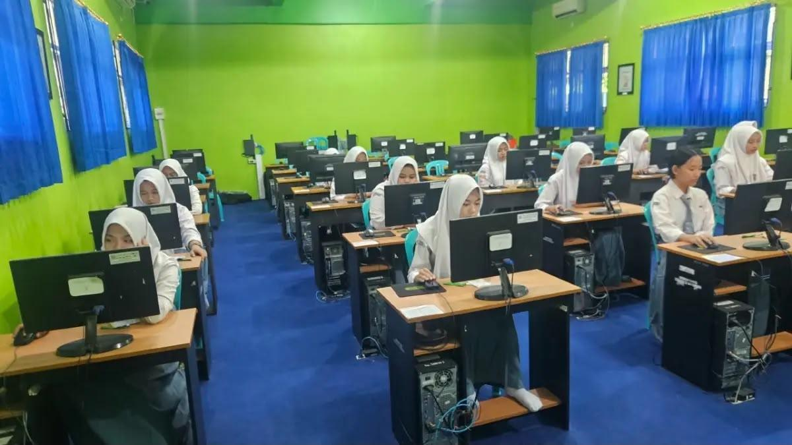

Pelaksanaan TKA 2026 di Kota Madiun: 4.617 Siswa Ikut Ujian, Gangguan Sistem Jadi Kendala

MADIUN — Sebanyak 4.617 siswa tingkat SMA dan SMK di Kota Madiun, Jawa Timur, mengikuti Tes Kemampuan Akademik (TKA) 2026. Pelaksanaan ujian yang berlangsung pada 26–29 Oktober dan 2–5 November tersebut sempat mengalami kendala teknis akibat gangguan sistem aplikasi, yang menyebabkan sejumlah peserta kesulitan mengakses soal ujian.
Berdasarkan data Cabang Dinas Pendidikan (Cabdindik) Jawa Timur Wilayah Madiun, jumlah peserta TKA terdiri atas 1.928 siswa SMA dan 2.689 siswa SMK. Pelaksanaan ujian dibagi menjadi dua gelombang untuk menyesuaikan jumlah peserta dengan fasilitas komputer yang tersedia di masing-masing sekolah.
Kepala Seksi SMA, Pendidikan Khusus, dan Pendidikan Layanan Khusus Cabdindik Jawa Timur Wilayah Madiun, Changgih Swantaka Yoga Nendi, mengatakan persiapan pelaksanaan TKA telah dilakukan sejak September 2026. Persiapan tersebut meliputi pendataan peserta, kesiapan ruang ujian, perangkat komputer, serta infrastruktur pendukung lainnya.
Dalam keterangannya kepada ANTARA pada Jumat (23/10/2026), Changgih menyampaikan bahwa sebanyak 4.617 siswa SMA dan SMK telah dipersiapkan untuk mengikuti pelaksanaan TKA tahun ini. Pembagian jadwal menjadi dua gelombang dilakukan agar ujian dapat berjalan sesuai kapasitas sekolah.
Gangguan Sistem pada Gelombang Pertama
Meski persiapan telah dilakukan, pelaksanaan TKA tidak sepenuhnya berjalan tanpa hambatan. Pada hari kedua gelombang pertama, Selasa (27/10/2026), sejumlah siswa mengalami kesulitan ketika mengakses aplikasi ujian. Gangguan tersebut diduga berasal dari sistem pusat yang digunakan dalam pelaksanaan tes secara daring.
Tim Teknis TKA Cabdindik Jawa Timur Wilayah Madiun, Sukma Ndaru, menjelaskan bahwa kendala yang terjadi bukan berasal dari perangkat komputer maupun jaringan internet sekolah.
“Untuk kendala teknis seperti komputer dan jaringan, di wilayah Kota Madiun sudah tidak ada masalah. Hanya saja, ada gangguan pada web atau sistem dari pusat,” ujar Sukma, sebagaimana dikutip Radar Madiun pada Rabu (28/10/2026).
Gangguan tersebut berdampak terhadap sejumlah peserta yang tidak dapat mengakses ujian secara normal. Pihak Cabdindik kemudian mendata siswa yang terdampak untuk mengusulkan pelaksanaan ujian susulan sesuai arahan pemerintah pusat.
Dalam pemberitaan Radar Madiun pada Senin (2/11/2026), peserta yang mengalami gangguan sistem dimasukkan ke dalam kategori keadaan kahar atau force majeure. Penanganan tersebut dilakukan agar siswa yang terdampak tetap memperoleh kesempatan mengikuti tes.
Gelombang Kedua Berjalan Lebih Stabil
Pelaksanaan TKA berlanjut pada gelombang kedua yang berlangsung pada 2–5 November 2026. Sebanyak 1.373 siswa SMA dan SMK mengikuti ujian pada gelombang tersebut. Berdasarkan keterangan Cabdindik, pelaksanaan gelombang kedua secara umum berjalan lebih stabil dan tidak ditemukan kendala teknis berarti.
Kasi SMA/PKPLK Cabdindik Jawa Timur Wilayah Madiun, Changgih Swantaka Yoga Nendi, mengatakan sekolah telah memberikan pendampingan serta melaksanakan gladi bersih sebelum ujian dimulai. Langkah tersebut dilakukan untuk membiasakan siswa dengan sistem ujian berbasis komputer.
“Secara umum tidak ditemukan kendala berarti selama pelaksanaan,” ujar Changgih dalam pemberitaan Radar Madiun, Kamis (5/11/2026).
Kesiapan Perangkat dan Tujuan TKA
Selain gangguan sistem, keterbatasan perangkat komputer juga menjadi perhatian dalam pelaksanaan TKA di Kota Madiun. Sejumlah sekolah yang belum memiliki fasilitas memadai harus berkoordinasi dengan sekolah lain untuk menggunakan perangkat yang tersedia. Pembagian sesi dan gelombang menjadi salah satu upaya untuk mengatasi keterbatasan tersebut.
Tes Kemampuan Akademik merupakan bentuk penilaian terstandar yang diselenggarakan oleh Kementerian Pendidikan Dasar dan Menengah. Berdasarkan penjelasan resmi pada laman TKA Kemendikdasmen, tes ini bertujuan memberikan informasi mengenai capaian akademik individu murid secara lebih terukur. Hasilnya dapat digunakan sebagai salah satu bahan pertimbangan dalam proses seleksi akademik serta memberikan gambaran mengenai kemampuan dan kekuatan akademik siswa.
Kementerian Pendidikan Dasar dan Menengah juga menegaskan bahwa TKA bukan merupakan penentu kelulusan siswa. Dengan demikian, pelaksanaan tes ini lebih diarahkan sebagai sarana memperoleh informasi capaian akademik, bukan sebagai satu-satunya ukuran keberhasilan peserta didik.
Pelaksanaan TKA 2026 di Kota Madiun menjadi catatan bagi penyelenggara pendidikan, terutama dalam hal kesiapan infrastruktur dan kestabilan sistem ujian. Evaluasi terhadap kendala yang terjadi diperlukan agar pelaksanaan tes berikutnya dapat berjalan lebih optimal serta memberikan kesempatan yang sama bagi seluruh peserta didik.
Oleh: M Fauzan Al Ghifari
Sumber
ANTARA News Jawa Timur. (23 Oktober 2026). Sebanyak 4.617 Siswa di Kota Madiun Siap Ikuti TKA Jenjang SMA dan SMK.
Radar Madiun. (28 Oktober 2026). Sistem TKA 2026 Sempat Error di Kota Madiun, Cabdindik Jatim Tunggu Kepastian Ujian Susulan.
Radar Madiun. (2 November 2026). TKA SMA/SMK Kota Madiun Terkendala Sistem Error, Sejumlah Siswa Ikuti Ujian Susulan.
Radar Madiun. (5 November 2026). 1.373 Siswa SMA/SMK di Madiun Ikuti TKA Gelombang Kedua, Ujian Susulan Digelar Pertengahan November.
Kementerian Pendidikan Dasar dan Menengah (Kemendikdasmen). Tes Kemampuan Akademik 2026.